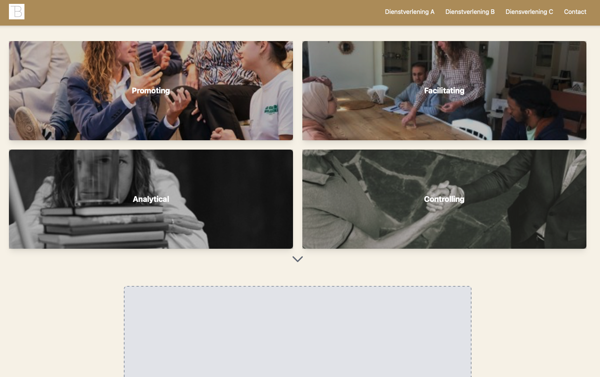
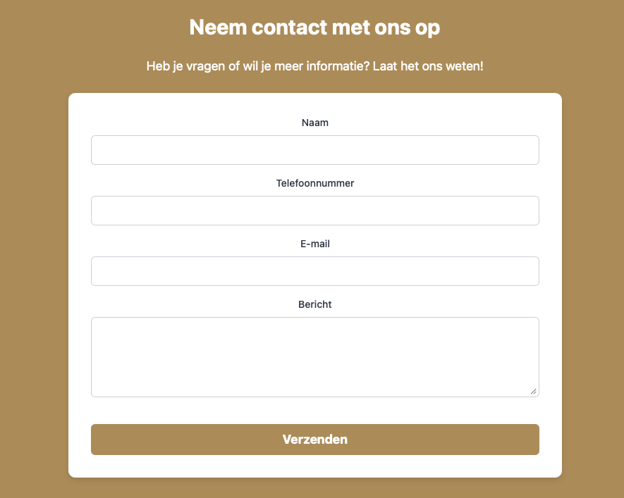
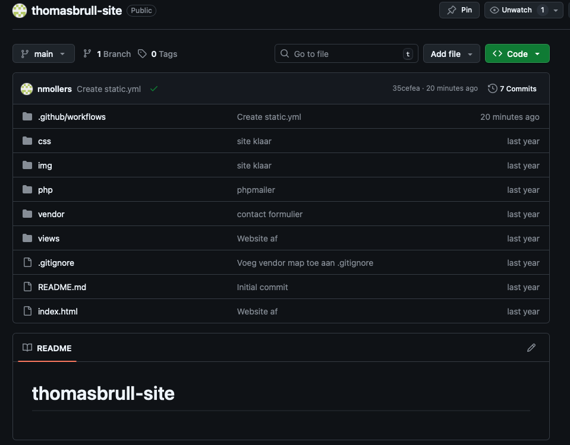
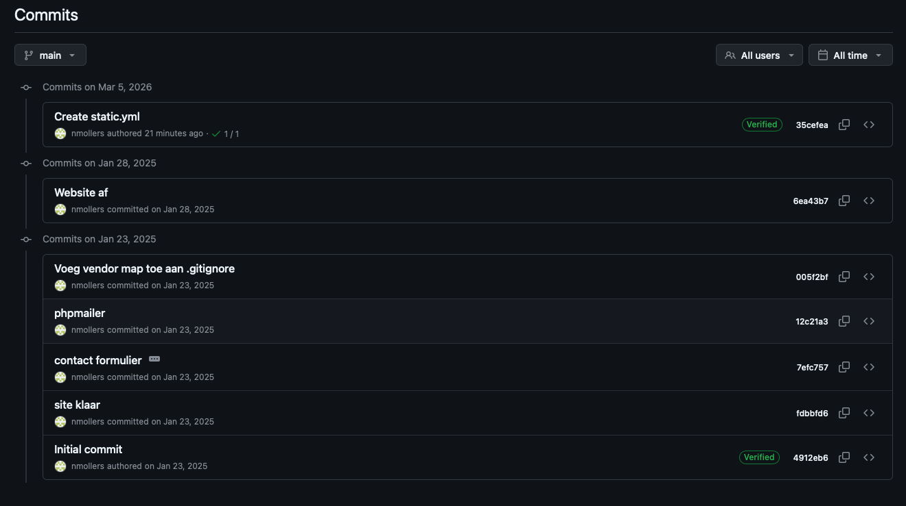
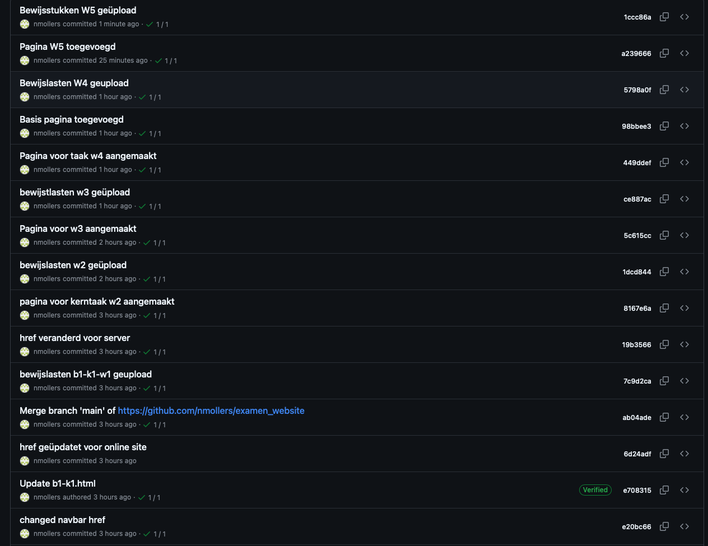
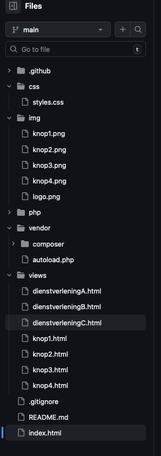

In dit werkproces heb ik de website daadwerkelijk ontwikkeld op basis van het eerder gemaakte ontwerp. Hierbij heb ik verschillende functionaliteiten geïmplementeerd en de applicatie getest.
Tijdens dit proces heb ik de 2 use cases ontwikkeld met HTML, CSS en JavaScript. Ik heb onder andere de 4 knoppen op de homepage en een contactformulier geïmplementeerd.
Software developer – verantwoordelijk voor het realiseren van de 2 use cases van de website.
Actor: Bezoeker
De gebruiker bevindt zich op de contactpagina.
Het bericht is succesvol verzonden.
Actor: Bezoeker
De gebruiker bevindt zich op de homepagina.
De gebruiker bevindt zich op de gekozen subpagina.

De homepage van de website met navigatie naar verschillende onderdelen van de website.

Het contactformulier waarmee gebruikers een bericht kunnen sturen naar de opdrachtgever.
In deze video wordt de werking van de website getoond. Hierbij worden de verschillende pagina's en navigatie van de website gedemonstreerd.
In deze video wordt het contactformulier getest en wordt getoond hoe een gebruiker een bericht kan versturen. Ook wordt getoond hoe het formulier reageert op ongeldige invoer.
Als bewijslast heb ik een to-do list applicatie ontwikkeld in
React. Deze code is een voorbeeld van mijn
programmeervaardigheden en mijn vermogen om een functionele
applicatie te bouwen. Tijdens mijn stage bij Mouw-IT
heb ik gewerkt met Laravel en React, maar door omstandigheden
buiten mijn controle heb ik hier helaas geen code van kunnen
bewaren. Om alsnog mijn technische kennis aan te tonen heb ik
deze applicatie zelfstandig ontwikkeld.
// ─── Imports ─────────────────────────────────────────────────────────────────
// useState is een React hook waarmee we data kunnen opslaan en updaten
import { useState } from "react";
// ─── Interface ───────────────────────────────────────────────────────────────
/**
* Beschrijft hoe een to-do item eruit ziet.
* TypeScript gebruikt dit om fouten te voorkomen.
*/
interface TodoItem {
id: number; // Uniek nummer per taak
task: string; // Omschrijving van de taak
done: boolean; // true = afgerond, false = nog te doen
}
// ─── Component ───────────────────────────────────────────────────────────────
/**
* TodoList component — beheert en toont een lijst van taken.
* TSX combineert TypeScript met React's JSX syntax.
*/
export default function TodoList() {
// Sla alle taken op — TypeScript weet dat dit een array van TodoItems is
const [items, setItems] = useState<TodoItem[]>([]);
// Sla de tekst op die de gebruiker typt, altijd een string
const [input, setInput] = useState<string>("");
// Telt mee welk ID het volgende item krijgt, begint op 1
const [nextId, setNextId] = useState<number>(1);
// ─── Functies ───────────────────────────────────────────────────────────────
/**
* Voegt een nieuwe taak toe aan de lijst.
*/
function addTask(): void {
// Als het invoerveld leeg is, doe dan niets
if (!input.trim()) return;
// Maak een nieuw object aan op basis van de TodoItem interface
const newItem: TodoItem = {
id: nextId, // Geef het item een uniek ID
task: input, // Gebruik de tekst uit het invoerveld
done: false, // Nieuwe taken zijn standaard niet afgerond
};
// Voeg het nieuwe item toe — spread zorgt dat oude items bewaard blijven
setItems([...items, newItem]);
// Verhoog het ID voor het volgende item
setNextId(nextId + 1);
// Maak het invoerveld leeg na het toevoegen
setInput("");
}
/**
* Markeert een taak als afgerond of zet hem terug.
*/
function completeTask(id: number): void {
// Wissel done om voor het item met dit ID
const updated: TodoItem[] = items.map((item) =>
item.id === id ? { ...item, done: !item.done } : item
);
setItems(updated);
}
/**
* Verwijdert een taak uit de lijst.
*/
function deleteTask(id: number): void {
// Filter het item met dit ID eruit
setItems(items.filter((item) => item.id !== id));
}
// ─── UI ─────────────────────────────────────────────────────────────────────
return (
<div>
<h2>To-Do Lijst</h2>
{/* Invoerveld waar de gebruiker een taak intypt */}
<input
type="text"
value={input}
onChange={(e: React.ChangeEvent<HTMLInputElement>) => setInput(e.target.value)}
placeholder="Voer een taak in..."
/>
{/* Knop om de taak toe te voegen */}
<button onClick={addTask}>Toevoegen</button>
{/* Loop door alle items en toon ze als een lijst */}
<ul>
{items.map((item: TodoItem) => (
<li key={item.id}>
<span style={{ textDecoration: item.done ? "line-through" : "none" }}>
{item.task}
</span>
<button onClick={() => completeTask(item.id)}>
{item.done ? "↩ Terugzetten" : "✅ Afgerond"}
</button>
<button onClick={() => deleteTask(item.id)}>❌ Verwijderen</button>
</li>
))}
</ul>
</div>
);
}
Hieronder is de to-do list ook daadwerkelijk werkend te zien:
Tijdens de ontwikkeling van de website heb ik gebruik gemaakt van Git voor versiebeheer. Git maakt het mogelijk om wijzigingen in de code bij te houden en eerdere versies van het project terug te halen. De repository van het project is opgeslagen op GitHub.
Bekijk GitHub repository Site Thomas Bekijk GitHub repository Examen Website
De volledige broncode van het project staat opgeslagen in een GitHub repository. Hier worden alle bestanden van het project beheerd.

GitHub houdt een geschiedenis bij van alle wijzigingen die in het project zijn gemaakt. Hierdoor kan de ontwikkeling van de software worden gevolgd. Tijdens dit project hebben wij 2 jaar terug niet veel commits gedaan omdat we nog lerend waren hoe git werkte.

In de commit geschiedenis van de examen website is te zien dat er regelmatig commits zijn gemaakt tijdens het ontwikkelproces. Hierdoor is goed te volgen hoe de software zich heeft ontwikkeld en welke wijzigingen er zijn aangebracht. Dit is een stuk beter dan de commit geschiedenis van de site Thomas omdat hier meer commits zijn gemaakt en er dus beter te volgen is hoe de software zich heeft ontwikkeld.

De repository bevat de volledige projectstructuur van de website inclusief HTML, CSS en JavaScript bestanden.